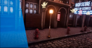
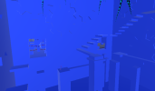

Plutôt Old School ?
Téléchargez le CV en
format PDF :
ME CONTACTER
07 82 33 20 10
bastienprob@gmail.com
b.prob@ludus-academie.com
https://drmole1.github.io/

Bastien Prob
Game Designer et Developpeur

 


Présentation
Titulaire d’un diplôme bac +5 "Chef de projets informatiques et multimédia", je suis développeur informatique, spécialisé dans le développement de jeux vidéo.
Passionné de conception de jeux depuis mes 6 ans, je me suis vite orienté dans la création de jeux vidéo durant mes années de collège. Ainsi, c’est donc naturellement que j’en ai fait ma vocation. Avec le temps, mon domaine d'expertise s'est élargi au web, au mobile, à la BDD et à l'applicationnel.
Le Serious Game m’attire tout particulièrement pour sa dimension sérieuse et le fait qu’elle puisse apporter des avantages qui vont au-delà du simple amusement.

Expériences Professionnelles
Serious Game Dev – 2022

2 mois
Mairie, Kingersheim
Game Designer d’Escape Game – 2021

6 mois
Locks Adventure, Schweighouse-sur-Moder
Game Design / Dev Advergame – 2020

3 mois
Atheo Ingenierie, Strasbourg
Game Designer / Dev VR Game : CAVE-DOME – 2019/2020

8 mois
Pixel Museum, Strasbourg
Préparateur de commandes en logistique – 2018

3 mois
Décathlon, Wittenheim
SteamBall

Steam Ball est un jeu d'arcade en réalité virtuelle (en CAVE ou en DOME), qui a été commandité par le Pixel Museum à Schiltigheim. L’objectif étant de faire de la publicité pour ce musée du jeu-vidéo en proposant au public une expérience innovante, accessible toute l’année afin d’augmenter la fréquentation du musée. Une vidéo de présentation est disponible ici .


PacHuman


PacHuman est un advergame réalisé, au sein d'une équipe projet, pour la société Atheo Ingenierie. Le jeu reprend les valeurs de l'entreprise pour renouveller le jeu Pacman. J'ai pu m'occuper de la programmation d'IA, de la production de documents de projet, de la gestion des tâches de l'équipe ainsi que des rapports et échanges profesionnels avec le client et la graphiste, dans une dynamique AGILE de projet. Le jeu a été porté sur web, Android et IOS.
L'Epreuve de L'Ombre

L'Epreuve de l'Ombre est un scénario d'Escape Game Urbain, réalisable dans la ville d'Haguenau. Les joueurs incarnent des voleurs testant leur aptitude à concevoir un casse. La filature, la discrétion, la falsification, le crochetage ... font parties intégrantes des énigmes. Conçu durant mon stage de 6 mois chez Locks Adventure : https://locksadventure.fr/nos-missions


La Gloire des Vikings
La Gloire des Vikings est un scénario d'Escape Game à faire à la maison. J'ai dû m'occuper entièrement du projet, depuis le pitch de la thématique, jusqu'à l'organisation des playtests, en passant par la construction des prototypes en carton et au design des énigmes/histoires. Conçu durant mon stage de 6 mois chez Locks Adventure : https://locksadventure.fr/nos-missions
KingVelo

King Vélo est un Serious Game visant à apprendre aux enfants les règles de bon usage à vélo. Je me suis occupé du projet, tout seul, de A à Z, en communiquant à chaque fois mon avancé à mon maître de stage selon une méthologie SCRUM très stricte. Le jeu est disponible ici .
Projets étudiants réalisés
Du plus récent au plus ancien.
EgoManiac


Il s'agit du joyau de ma collection de projets ! Plus de 650H de développement sur Unity pour produire ce jeu d'énigmes non-euclidiennes sur le thème du narcissisme au 21e siècle. Je travaille sur tous les aspects du jeu, que ce soit la programmation, la documentation GD et la direction artistique. Les youtubers Bob Lennon et E-Penser ont pu le tester lors d'un salon. Un trailer est disponible ici .


Amsterdam Trip
Il s'agit d'une application mobile m'ayant permis d'organiser mon voyage à Amsterdam et de stocker mes photos. Développée sur Xamarin, il s'agissait de manipuler le CRUD avec une base de données sqlite, le tout en C#. Je pouvais donc créer une activité que je souhaitais faire, la valider comme une to-do list, et y stocker les photos en rapport. J'ai pu apprendre la manipulation de Xamarin de manière 100% autodidacte pour répondre à mes besoins !
HexaGo

Il s'agit d'un Rogue Like conçu pour console XBox, jouable à la manette uniquement. En plus d'avoir conçu le game design, les graphismes et grandement participé au dev, j'ai été chef de projet en supervisant deux autres devs. Le jeu est téléchargeable ici .

Rando Addict
Rando Addict est un site web dynamique développé avec HTML, CSS, Javascript, PhP et SQL pour gérer des randonnées. Liées à une base de données, les fonctionnalités du site touchent au CRUD. Chaque utilisateur peut créer un compte, participer à une randonnée, demander à être guide, créer un programme etc ... Dans le cadre d'une thèse de master, j'ai conçu ce site en respectant les processus de GreenCode. Le projet est disponible ici .
StarScale

Il s'agit d'un Serious Game pour apprendre très brièvement les concepts fondamentaux de l'astrophysique, et plus précisément, la paramétrisation cosmique. Fait sur Unity en utilisant le C#, puis présenté à un jury pour l'optention de mon master. Le jeu est disponible ici .
Lab0 : An Arcane FanGame


Lab0 est un jeu développé intégralement sur Phaser, en Javascript. Il s'agissait de produire un jeu d'arcade fun rendant hommage à la série Arcane. Le principal enjeu fut de vite comprendre le framework pour le maîtriser et produire un jeu original. Le jeu est disponible ici .
The Sweety Gummy


Il s'agit d'un jeu développé en 3 mois sur Unity, mélange entre Candy Crush et un casse brique. Trouvable sur le Google Store, il s'agit d'un jeu mobile coloré et absolumment juicy sur le thème des bonbons. L'accent a été mis sur l'UI/UX pour pouvoir me parfaire dans ces domaines. Plus de 50 niveaux sont disponibles avec des gameplays innovants et surprenants !

Glowing Nightmare


Glowing Nightmare fut un jeu développé durant la Mix and Jam 2020, sur Unity, en équipe et en 48h. Il s'agissait de concevoir un jeu mixant le genre du rail shooter et le genre de l'horreur, ce qui a donné un petit train fantôme où le joueur doit tirer sur des cibles. Une vidéo de présentation est disponible ici . Le projet est disponible ici .
HoleHole!


HoleHole! est l'un des 3 mini-jeux produits au sein d'une équipe de 9, sur Unity, dont j'avais la responsabilité. Il s'agissait de concevoir un jeu fun et coloré multijoueur, et surtout, compatible avec la SWITCH. La gestion de projet ainsi que la compréhension de la documentation de Nintendo furent les principaux challenges.
AbstractCore

AbstractCore est un jeu d'action, d'aventure et de survie en coopération multijoueur, en ligne. Développé durant le 1er confinement (durant mon temps très libre), sur Unity, j'ai utilisé le framework .NET pour produire ce jeu de survie dans un environnement très hostile. Les joueurs doivent apprendre à gérer la faim, le déphasage, les radiations, doivent ouvrir des portes, se soigner des pièges sournois et traverser des dimensions.
Burst Dirty Data


Burst Dirty Data est un Serious Game qui a pour but d'aider le joueur dans son apprentissage de la BDD. Il permet d'entrainer le joueur à lire et comprendre des requêtes SQL. Nous avons mis en place un système de haut faits, de bonus et de score pour pousser le joueur à se dépasser afin de le motiver dans son apprentissage. Le projet est disponible ici .
Repentance


Il s'agit d'un jeu de plateforme produit sur Unity sur une longue période. C'est un jeu très sombre où le personnage principal doit faire face à ses vices. Je me suis particulièrement bien amusé à designer et programmer des boss de jeu. Un trailer est disponible ici .
What A Wonderful World


Il s'agit d'un jeu produit sur Unity, une interprêtation de Candide de Voltaire avec une sauce Tim Burton le tout sous la forme d'un platformer à ambiance. Le joueur déplace le personnage en se penchant de droite à gauche (la caméra détectant les mouvements), se lève pour sauter, donne un coup de tête pour détruire des coffres et cligne des yeux pour rendre la scène plus sombre temporairement (accentuant la peur).
Take Place


Take Place est un serious game sur mobile produit sur Unity dont le propos est d'apprendre au joueur l'agoraphobie ainsi que l'anxiété en milieu publique. Le joueur doit déplacer les personnages d'un bus afin que ceux-ci se trouvent à la place qu'ils devraient occuper avant que ceux-ci ne tombent dans les pommes.
Linked Letters


Linked Letters est un serious game sur mobile produit sur Unity visant à apprendre l'anglais sans que ce soit un quizz ou un quizz déguisé. Par un principe de colorimétrie, le joueur déplace des boules comportant une lettre et doit jeter dans un bocal pour que celles-ci forment un mot, libérant des bulles de bonus et de malus. Si le joueur éclate les bulles, il libère de la place et modifie son score en fonction du type de la bulle (malus bonus).
Flop


Flop est un serious game sur mobile visant à apprendre les différentes phases du cancer. Le jeu propose des variations de gameplays différents en fonction de termes techniques comme l'angiogenèse, la métastase ou la division incontrôlée. Développé sur Unity, j'ai pu apprendre beaucoup de cet environnement qui est maintenant l'un de mes moteurs préférés.
Jet Outa Here


Jet Outa Here est un projet étudiant réalisé sur UE4. Il s'agit d'un jeu en VR où le joueur incarne un cyber-chevalier de l'espace, qui doit faire face à un trou noir attirant toutes sortes d'objets (astéroïdes, épées, boucliers, piles ...). Le but étant de faire le meilleur score jusqu'à ce que le trou noir annihile le joueur ou que le joueur trouve les composants de téléportations. Jeu playtesté durant la Start-to-Play 2019, y compris par Fred of the Dead.
Run to have Chance

Run to have Chance est une variante de Temple Run. Développé sur Unreal Engine 4, en BluePrint, le joueur incarne un fermier devant courir et sauter tout en évitant les obstacles. Il peut aussi attraper des pièces lui permettant d'acheter des boosters pour les prochaines parties lancées. Un système de scoring est mis en place afin de voir sa meilleure progression.
Mission PMU

Mission PMU est un jeu mêlant réflexion à la Mahjong ainsi qu'une base scénaristique comique voire absurde. Aidez Patrick, Michel et Ursula à s'évader de la pire maison de retraite qui soit afin de prendre un peu de bon temps au PMU du coin. Le jeu propose un gameplay détendu, calme et nécessitant de la réflexion, adapté à une cible senior.
Escarg'Home


Escarg'Home est un jeu basé sur la thématique du foyer, réalisé en 48H sur Construct lors de la Global Game Jam 2019. Il s'agit d'un jeu de plateforme où le joueur incarne un escargot. Bravant les différents puzzles, le joueur devra swap entre les différentes coquilles de pouvoirs (offrant chacune une compétence) afin d'arriver au bout du niveau.
SPRAY


Spray est mon tout premier jeu développé de A à Z, avec l'aide de Construct 2. Comprenant 30 niveaux pour une durée de jeu environ égale à 1H30, Spray est un casse brique dont le mélange juicy et coloré incite aux combos ! La thématique basée sur les pubs irlandais offre une ambiance posée et festive à la fois, donnant l'envie aux joueurs de collecter les différentes boissons aux pouvoirs surprenants.